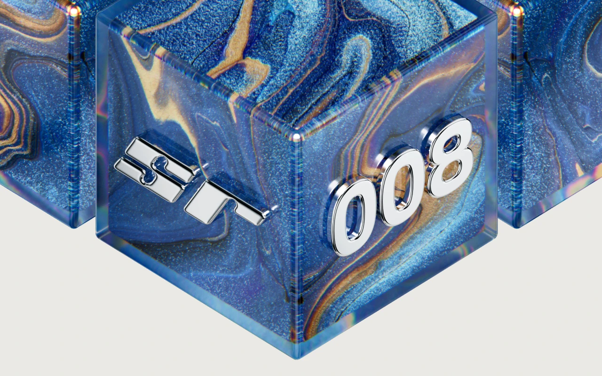
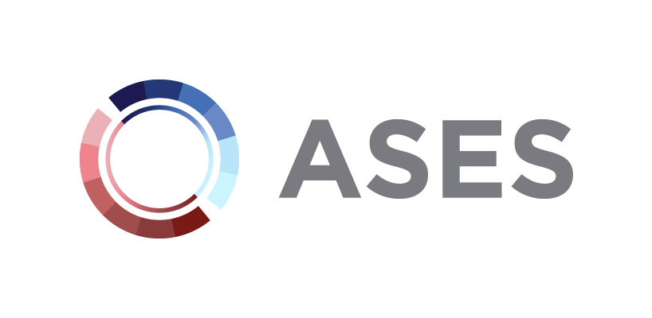

I scout for a16z speedrun and write angel checks from its scout fund. Right now, I'm looking for SR008.

sr008 — scouting now
3early-stage teams sourced across consumer, biotech & ai
SR007futurist health, accepted into speedrun's 007 cohort
Mostly it's meeting a lot of founders early and caring about the people first: how fast they move and how much agency they have, then the market and traction. When I back a team, I stay close with investor intros, hiring, go-to-market, and regular check-ins.
VC3 puts Stanford founders and venture capitalists in the same room for an on-campus pitch event. I sourced the most Bay Area VCs of anyone on the leadership team.

working with stanford alumni at
a16z
CRV
Pear
Accel
XFund
Neo
I also helped run selection, taking Stanford undergrad, grad, and PhD applicants from interviews to acceptance.